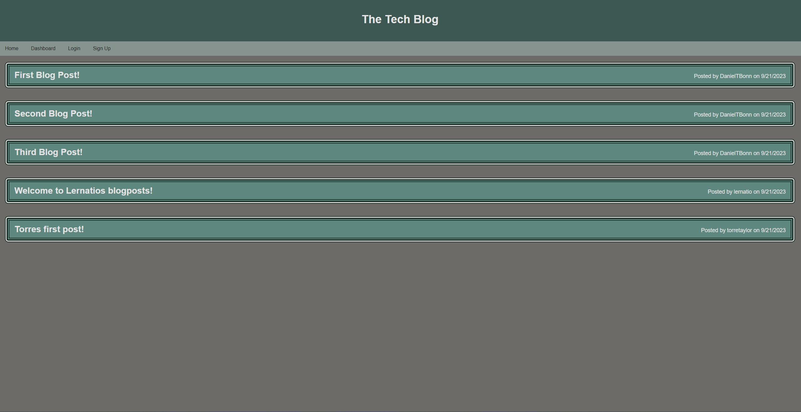
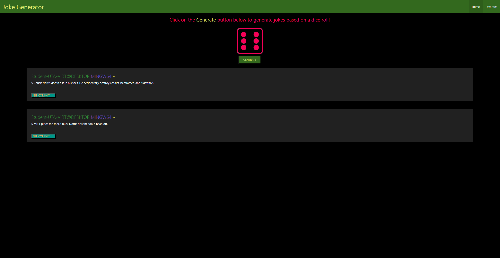
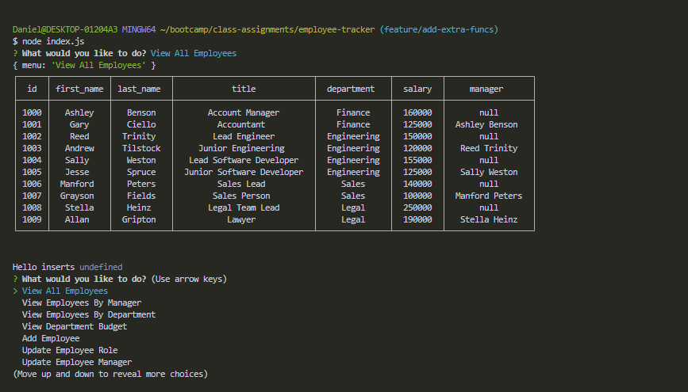
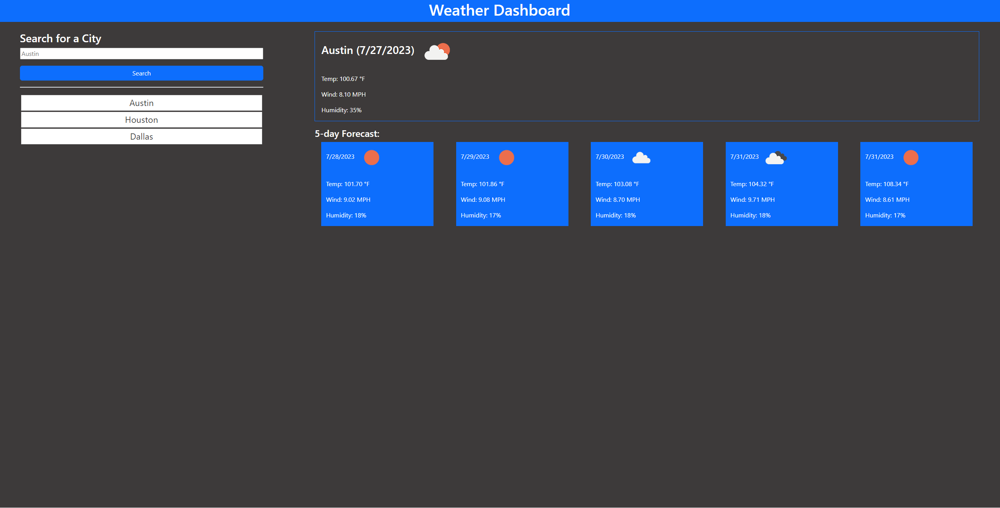

I graduated from UT Austin majoring in Physics and minoring in Economics. Afterwards, I spent some time working on a risk management team in the oil and gas industry where i gained exposure to data science and discovered the power of programming. I started out small creating web scrapping programs and simple compiling programs for excel spread sheets and pdfs using R and Python. As I learned more my curiosity grew and led me to expanding my skillset and general computer science knowledge. I now have a solid foundation in data structures and algorithms as well as a passion for building fun and interesting projects that may improve my efficiency, or solve some type of problem.
I was drawn to web development since its a great way to work on complex problems, express creativity, and get familiar with some of the most exciting cutting edge technology used in today's industry. As an aspiring full stack developer, I intend to leverage my ability to problem solve for backend development, and utilize current technologies as well as a discerning eye for creating a user friendly frontend environment. Please take a look at some of the latest projects that I've been working on below.
Tech Ecommerce Store
Tech Blog
Joke Generator
SQL Employee Tracker
Weather Application